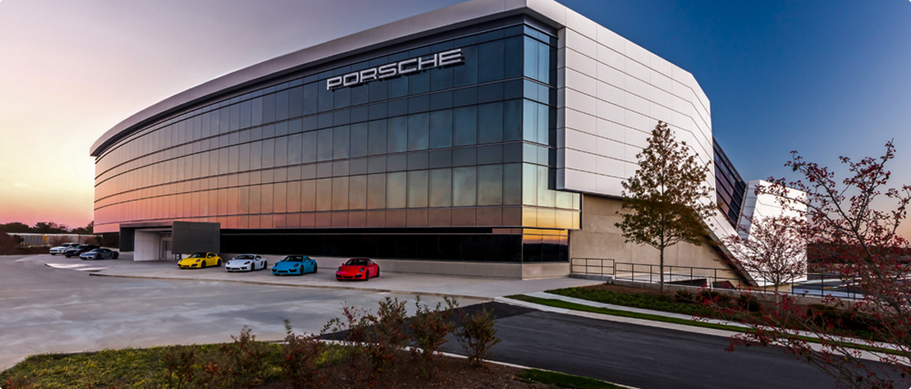

PORSCHE 911 GT3 R5
The Porsche 911 GT3 R (or 911 GT3 R5) is a specialized race car designed for participation in various racing series, including GT championships and other international competitions.
It represents an enhanced version of the legendary Porsche 911, with a reinforced structure, improved aerodynamic characteristics, and a powerful engine to ensure maximum performance on the track.
GALLERY

ABOUT US
Porsche is a German automotive company founded in 1931 by Ferdinand Porsche, an engineer who had previously worked on designing cars such as the Volkswagen Beetle. Today, Porsche is one of the most renowned and respected manufacturers of premium-class vehicles, specializing in sports cars, SUVs, and sedans, combining high performance, luxury, and innovative technologies in its models. The company's most iconic model is the Porsche 911, introduced in 1964. This car, with its rear-engine layout and unique design, quickly gained popularity and has since maintained its status, becoming a true icon of the automotive world. The development of the 911 was so successful that it set the brand's overall style and remains the foundation of Porsche to this day. Porsche has always been known for its technological achievements. The company’s engineers were among the first to use lightweight carbon materials, improve aerodynamics, and refine suspension systems, achieving exceptional handling and stability at high speeds. Porsche is also famous for its success in motorsport, where its models regularly place highly, including in prestigious races such as the 24 Hours of Le Mans.
